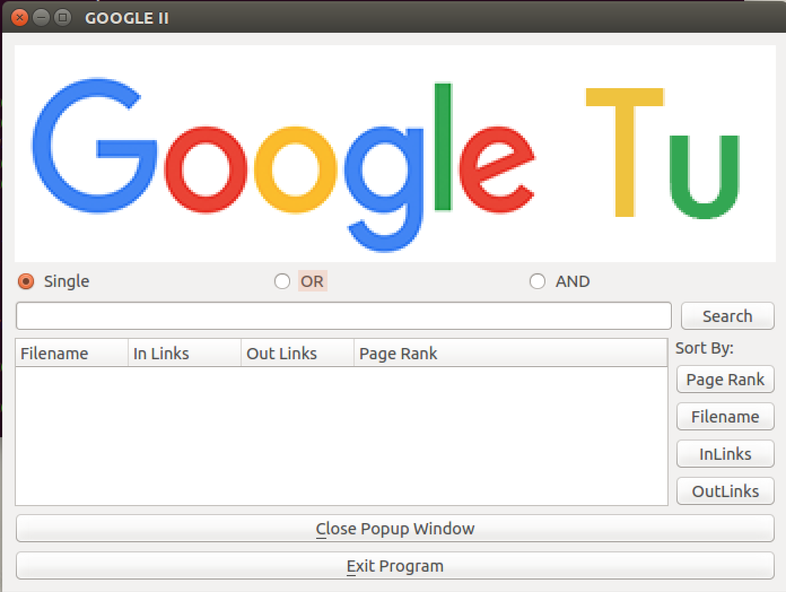
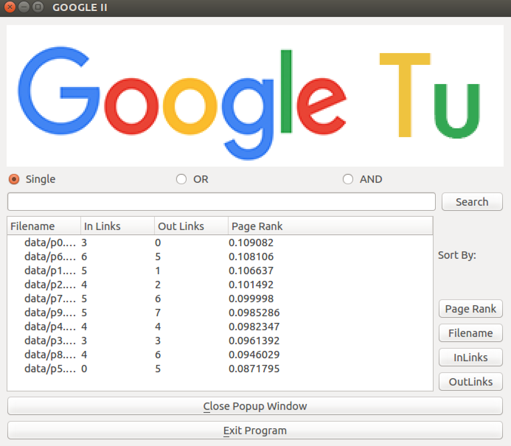
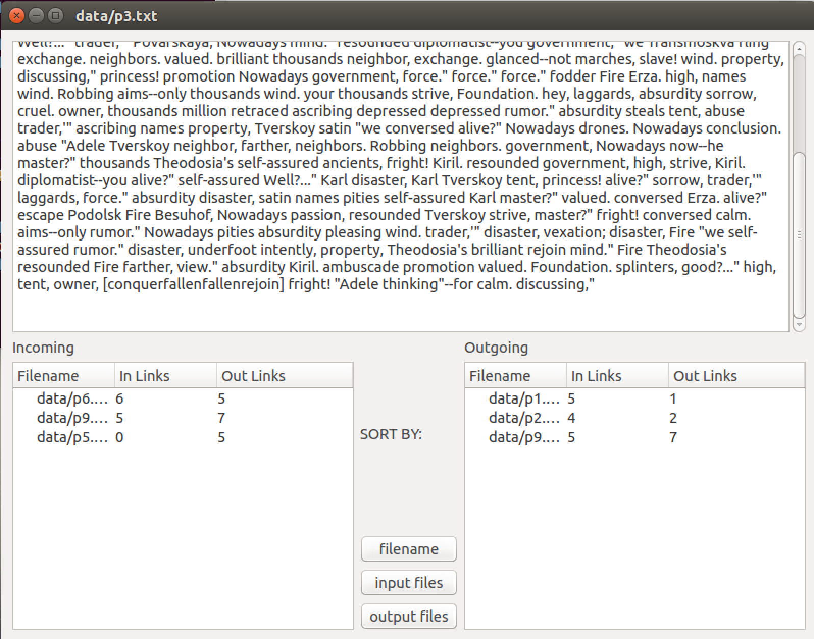

Projects
Hello! Thanks for checking out my Project's page, I have uploaded and written about a couple of the projects that I have worked on. Please feel free to contact me with any questions, comments, or concerns at jeantuviterbi@gmail.com
Google Tu
For this project, I created a mini search engine that implemented the pagerank algorithm for textfiles as if they were webpages. I called this project GoogleTu because it uses an algorithm that is what made Google famous in the first place and Tu because my last name is Tu and it sounds like the number two. Anyways, for this project took in an original .txt file from the terminal that was basically like an index file where the user is able to tell the program which files to add to it's database. The program them reads in the files and separates the information from the database into words, links, and hyperlinks. From there, the links were sorted into incoming links and outgoing links so that the user would be able to sort their results by most relevant (based on how many pages referred to that certain page), just by the file name, and the number of incoming and outgoing links.
Here are some images of the project:
  Hangman Project
I decided to just create a Hangman project on my own becase I wanted to create something simple as my first project that was to be built on my own that was not a homework assignment. I wanted to build something fun that the user would be able to play and enjoy, while not making the game too sophisticated. I had built the game using C++ and the user will need to use it throught their platform that is able to run a C++ program, but I also had my younger sister test out the program and she gave me her reviews and I made a couple of changes to make it a little better. I hope to be able to build a GUI for the game in the future.
To view the project, go ahead and click on my GitHub link on the right hand tool bar
ITP Website Projects
As directed from the front page, there were a couple of webpages that I had put together in regards to my previous minor being Web Technologies and Applications. I had recently switched to Applied Computer Security because I found that I would be able to teach myself web development using online tutorials, but would like to gain hands on experience in regards to cybersecurity and ethical hacking.
Below are links to my ITP 104: Introduction to Web Developtment and ITP 302: Advanced Web Publishing courses:
ITP 104 Works » ITP 302 Works »